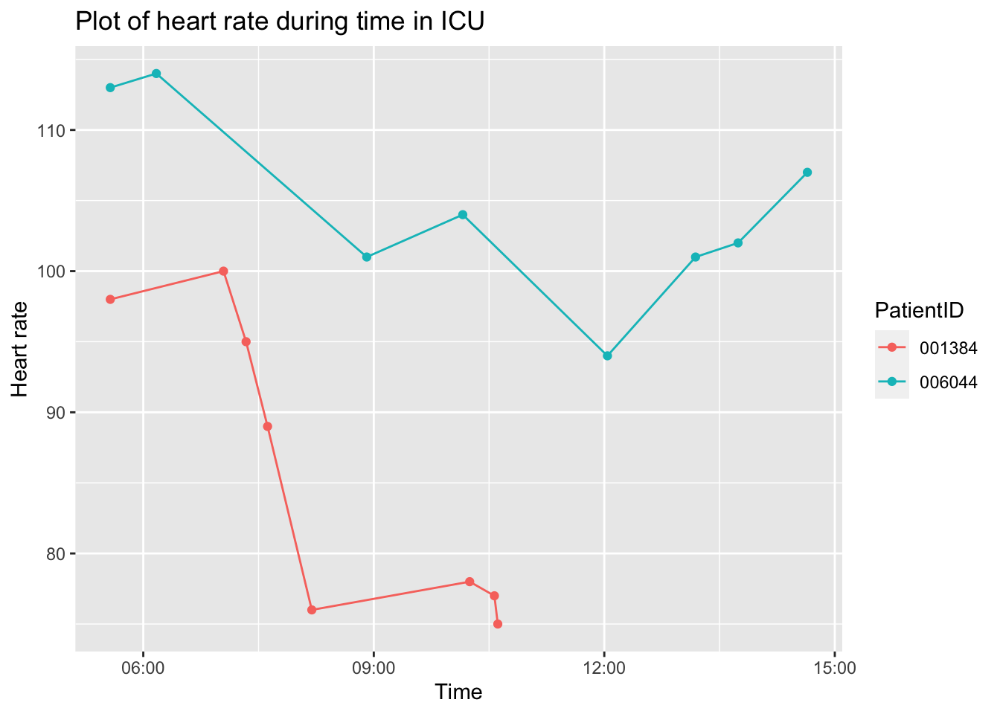
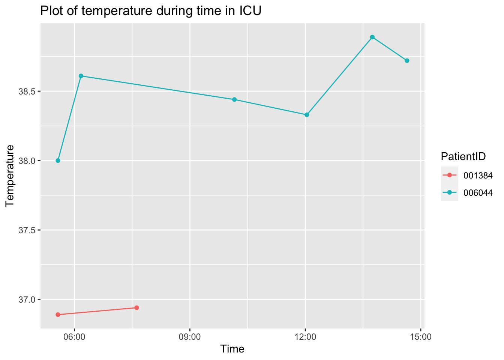
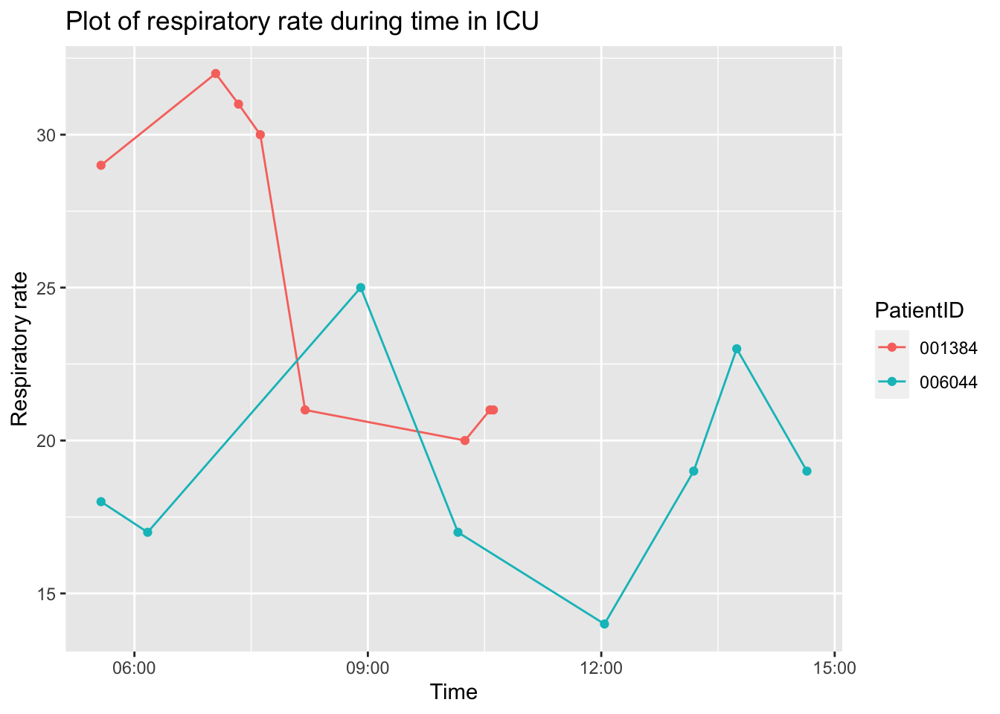

A7
Report generated on 2023-04-09 at 10:50:22 | Patients who currently have sepsis (if any), along with their most recent heart rate, temperature, and respiratory rate | ||
| HR | Temp | Resp |
|---|---|---|
| 001384 | ||
| 75 | NA | 21 |
| 006044 | ||
| 107 | 38.72 | 19 |

Warning: Removed 8 rows containing missing values (`geom_point()`).

| Change in heart rate, temperature, and respiratory rate between the last two measurements for all patients | |||
| PatientID | HR_Change | Temp_Change | Resp_Change |
|---|---|---|---|
| 000055 | -1 | NA | -8 |
| 000192 | -1 | NA | -4 |
| 000196 | -7 | 0.30 | NA |
| 000547 | 6 | NA | 3 |
| 000661 | -3 | NA | -2 |
| 000769 | 1 | NA | 1 |
| 000853 | NA | NA | NA |
| 001082 | 8 | NA | -1 |
| 001384 | -2 | NA | 0 |
| 001702 | NA | NA | 0 |
| 001827 | 4 | -0.70 | 4 |
| 001896 | -7 | NA | NA |
| 001975 | 1 | NA | 0 |
| 002019 | -4 | 0.10 | 3 |
| 002140 | 6 | NA | 3 |
| 002997 | -4 | NA | -4 |
| 003037 | -3 | NA | 0 |
| 003049 | NA | NA | NA |
| 003336 | 0 | NA | -1 |
| 003399 | NA | NA | NA |
| 003712 | 4 | NA | 3 |
| 003815 | 1 | NA | 0 |
| 004018 | 4 | NA | -2 |
| 004380 | 0 | 1.00 | -4 |
| 004450 | 1 | 0.20 | 1 |
| 004553 | -9 | NA | -2 |
| 005998 | 0 | NA | 1 |
| 006000 | -2 | NA | -1 |
| 006044 | 5 | -0.17 | -4 |
| 006088 | -44 | NA | -4 |
| 006135 | 2 | NA | -1 |
| 006192 | -1 | 0.00 | 2 |
| 006293 | 3 | NA | 0 |
| 006495 | 9 | NA | -5 |
| 006524 | 1 | NA | 6 |
| 006873 | -1 | -0.10 | -1 |
| 006986 | 2 | 0.20 | -4 |
| 007026 | -10 | NA | 3 |
| 007384 | 11 | NA | -1 |
| 007472 | 2 | NA | 5 |
| 007777 | 3 | NA | -1 |
| 007993 | -2 | NA | -1 |
| 008030 | NA | NA | NA |
| 008180 | -6 | -0.10 | 0 |
| 008415 | NA | NA | NA |
| 008721 | 0 | NA | 5 |
| 008951 | 9 | NA | -1 |
| 009426 | -3 | NA | -5 |
| 009543 | -1 | 0.45 | 4 |
| 009886 | -9 | NA | 2 |